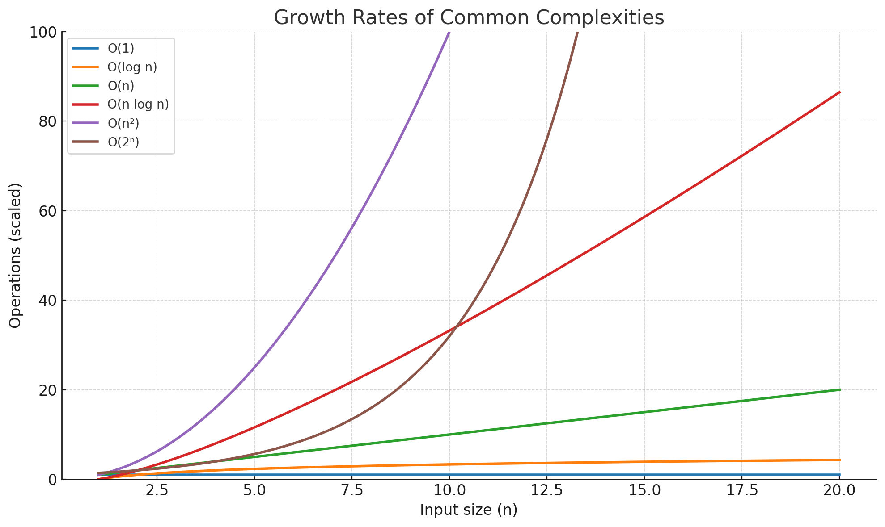

Asymptotic Notations
What is Asymptotic Notation?
Imagine you’re trying to see how fast an algorithm is as your input size grows. You don’t care about small details like:
- The brand of your CPU
- Whether you used
i++ori += 1 - Exact number of milliseconds
Instead, you want to know: 💡 “What happens when my input gets HUGE?”
That’s where asymptotic notation comes in. It’s like short-hand math for describing growth rates of algorithms.
Why do we need it?
- Ignore constants and small terms — focus on the big picture.
- Compare algorithms fairly — across different machines.
- Predict scalability — how well will it handle massive input.
Example:
- Algorithm A takes
0.05n² + 2n + 3operations. - Algorithm B takes
100n + 10operations.
For small n, B might be slower due to the big constant 100.
But as n grows, n² will crush n, so A will eventually be much slower.
The Main Asymptotic Notations
There are five primary notations you’ll see often.
Big O — Upper Bound
Definition: Describes the worst-case growth rate. It tells you: “It won’t grow faster than this.”
Formal idea:
Example:
If an algorithm takes 3n + 2 steps, then it’s O(n).
It won’t ever grow faster than some multiple of n.
You use Big O for:
- Worst-case runtime (common in competitive programming).
- Space complexity upper bound.
Big Omega (Ω) — Lower Bound
Definition: Describes the best-case growth rate. It says: “It will take at least this much time.”
Formal idea:
Example: If you must check every element at least once, best case is Ω(n).
Big Theta (Θ) — Tight Bound
Definition: Describes an exact growth rate. It says: “It grows at this rate, no faster, no slower (asymptotically).”
Formal idea:
Example:
5n + 3 is Θ(n) because:
- Upper bound is O(n)
- Lower bound is Ω(n)
Think: Θ is like pinning it down exactly.
Little o — Strictly Less Than
Definition: Describes that a function grows strictly slower than another.
Formal idea:
Example:
n is o(n²) because as n grows, n / n² = 1/n → 0.
Little omega — Strictly Greater Than
Definition: Opposite of little o. Function grows strictly faster.
Formal idea:
Example:
n² is ω(n) because n² / n = n → ∞.

Order of Growth Cheat Sheet
From slowest to fastest (common ones):
| Growth Rate | Name | Example |
|---|---|---|
| O(1) | Constant time | Access array element |
| O(log n) | Logarithmic | Binary search |
| O(n) | Linear | Loop through array |
| O(n log n) | Log-linear | Merge sort |
| O(n²) | Quadratic | Nested loops |
| O(n³) | Cubic | Triple nested loops |
| O(2ⁿ) | Exponential | Naive recursive Fibonacci |
| O(n!) | Factorial | Traveling salesman brute-force |
Dropping Constants & Lower-Order Terms
When writing Big O, we only care about the dominant term as n → ∞.
Example:
T(n) = 3n² + 10n + 5 → O(n²)
Because:
n²dominates for largen- Constants (3, 10, 5) don’t matter.
Best, Worst, and Average Cases
- Best case → Often given in Ω notation.
- Worst case → Often given in O notation.
- Average case → Can also use Θ notation.
Example:
Linear search in an array of size n:
- Best case (element at start) → Ω(1)
- Worst case (element at end or absent) → O(n)
- Average case → Θ(n)
Graphical Intuition
If we plotted time vs input size:
- O(n) → straight upward slope
- O(log n) → rises quickly at first, then flattens
- O(n²) → curve gets steep fast
- O(2ⁿ) → skyrockets almost immediately
Quick Summary Table
| Notation | Meaning | Says What? | Example |
|---|---|---|---|
| O(g(n)) | Upper bound | Worst-case | O(n²) |
| Ω(g(n)) | Lower bound | Best-case | Ω(n) |
| Θ(g(n)) | Tight bound | Exact asymptotic behavior | Θ(n) |
| o(g(n)) | Strictly less | Grows slower | o(n²) |
| ω(g(n)) | Strictly more | Grows faster | ω(n) |